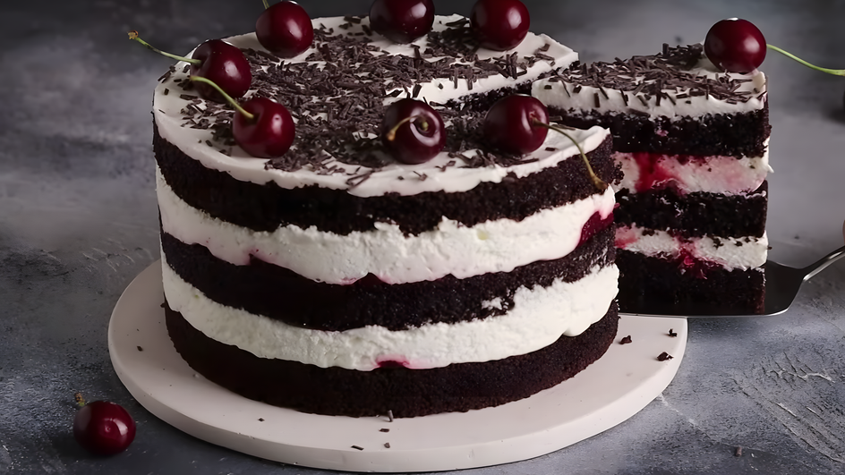

Скорпион — Торт "Черный лес"
Страстные, загадочные, с темной стороной...
Скорпионы любят интенсивные вкусы и драматичную подачу. Идеальный выбор — торт "Черный лес" с вишневой начинкой и темным шоколадом.
- Темный шоколад — символ таинственности
- Вишня с ликером — страсть и острота ощущений

Дева — Торт "Тирамису"
Идеалисты, перфекционисты, ценители порядка...
Девы предпочитают изысканные, сбалансированные десерты. Тирамису — идеальный выбор: каждый слой идеально продуман, вкус гармоничен.
- Маскарпоне высшего качества
- Кофе эспрессо (без сахара)
- Савоярди — печенье-безе

Водолей — Торт "Галактика"
Нестандартные, креативные, любят удивлять...
Водолеи выбирают необычные торты. Галактический торт с синими и фиолетовыми оттенками, съедобными блестками и сюрпризом внутри — их идеальный вариант!
- Бисквит с лавандой
- Начинка с голубикой
- Зеркальная глазурь "космос"